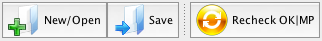
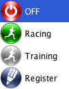

Toolbar

The toolbar offers global actions.
- New/Open opens the Launcher
- Save saves current data on disk. Note that data are backuped and saved automatically when you exit and at regular intervals
- Recheck OK|MP resets all status and all official times for runners with OK or MP status, to be used when a problem affecting all runners has been detected and fixed. Be careful with this action as it will also discard manual modification to race time you may have made.
The two following buttons manage Live features.

In addition, the toolbar lets you control the behavior of Geco when reading e-cards.

The left button controls auto-printing of split times when a runner downloads his e-card. The right one controls the e-card reader station.
When enabled, Split printing icon displays a yellow flash. When starting the reader station, Geco asks you if you want to enable split printing (if disabled).

The underneath button indicates that the reader is off.

Click to open a drop-down menu with the different modes for ecard reading.

Select your mode. While Geco is launching the reader, the toolbar will display a Starting… label. Errors are displayed in the status bar.
The underneath button indicates that the reader is on and accepts card reading in Racing mode. Click again to open the drop-down menu and switch between modes.